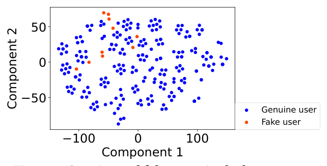

Poisoning Federated Recommender Systems with Fake Users (假用户投毒联邦推荐系统)
- 会议/期刊: WWW 2024 (The Web Conference, Singapore)
- 作者与机构: Ming Yin, Yichang Xu (USTC)；Minghong Fang, Neil Zhenqiang Gong (Duke University)
- 推荐链路定位: 召回（联邦矩阵分解的物品嵌入全局训练阶段，攻击面在 server↔user 上传的 item embedding 更新）
- 研究方向: 去偏公平、可信隐私与工业架构 / 协同过滤与双塔召回
- 论文原文: https://arxiv.org/abs/2402.11637v1
- 开源代码: 暂未开源
TL;DR (1分钟核心速览)
现有 FedRecs 投毒攻击几乎都要"额外知识"：真实用户交互数据（FedRecAttack）、全库物品流行度（PipAttack）或可模仿真实分布的合成数据（PSMU），而新注册的假用户根本拿不到这些信息。本文提出 PoisonFRS：假用户完全不训练本地模型，仅用服务器下发的物品嵌入反推 k 个流行物品、外推并放大出目标物品嵌入 \(\boldsymbol{v}'_t\)，每轮直接上传"把全局模型拽向目标"的更新向量，辅以锚定 filler 物品维持排序不被真实用户反超。在 Steam/Yelp/ML-10M/ML-20M 四个数据集、7 种聚合规则（含 Krum、HiCS）下，仅 0.03%–0.05% 假用户即可使目标物品 HR@5 达 0.70–1.00，而全部 8 个基线在 0.05% 规模下几乎全为 0。
Background & Motivation (背景与核心矛盾)
- 主流范式: FedRecs 每轮三步——服务器下发物品嵌入；用户用本地正负样本对 \(\mathcal{R}=\{(p_i,n_i)\}\)优化\(L=-\sum_i \ln\sigma(\hat{y}_{p_i}-\hat{y}_{n_i})\)并只上传物品嵌入增量\(\boldsymbol{g}^l=-\eta\nabla_{\mathbf{V}}L\)；服务器按某聚合规则 (FedAvg/Median/Trimmed-mean/Clip/Krum/HiCS) 聚合更新。
- 前人局限 1（信息不可得）: 攻击效果与先验知识强耦合——FedRecAttack 需部分真实评分矩阵，PipAttack 需精确流行度分布，PSMU 需合成与真实分布一致的本地数据；而假用户是攻击时刻新注册的，没有任何历史。
- 前人局限 2（小规模失效）: 一旦假用户比例压到 0.03%–0.05%，上述基线 HR@5 全部塌到 0，说明"依赖训练生成恶意梯度"的范式在稀疏真实数据（每用户平均交互极少）下梯度信号被真实用户淹没。
- 核心洞察 (Key Insight): 作者注意到攻击其实不需要训练——只要预先"算好"目标模型，每轮上传 \(\boldsymbol{v}'_t-\boldsymbol{v}^l_t\)就能把全局物品嵌入单调地拖过去；而"流行物品"可从物品嵌入几何中免费读出：大多数物品本身不受欢迎，故全体物品嵌入均值\(\boldsymbol{v}_{avg}\)近似"不受欢迎方向"，与之内积最小的\(k\) 个物品即为流行物品。
- 本文切入点: 用"几何外推 + 定向拖拽"替代"梯度训练"，把攻击的知识需求降为零（只要服务器下发的 \(\mathbf{V}\)）。
Method (核心方法设计)
1. 整体框架 (Overall Architecture)
假用户在全局第 \(s\)轮（默认 50）才加入。加入瞬间做一次"侦察"：读取当轮全部物品嵌入\(\mathbf{V}^s\)，计算均值\(\boldsymbol{v}_{avg}\)并选出\(k\)个最流行候选，构造目标物品嵌入\(\boldsymbol{v}'_t\)；同时记录全部物品嵌入快照用于后续 filler 锚定。此后每一轮\(l\ge s\)，每个假用户只做两件事：对目标物品上传朝向\(\boldsymbol{v}'_t\)的差分更新，对\(f\) 个"漂移最大"的 filler 物品上传"拉回快照"的反向更新；不上传用户嵌入、不做任何本地梯度计算、不产生任何交互数据。服务器无论用何种聚合规则，聚合结果都被这些固定方向的向量持续牵引。
flowchart TD
A["服务器下发物品嵌入 V^l"] --> B["估计流行物品：内积最小 k 个"]
B --> C["构造目标嵌入 v'_t = λ/k · Σ v_i"]
A --> D["记录快照 V^s，选漂移最大 f 个 filler"]
C --> E["目标项更新 g_t = v'_t − v^l_t"]
D --> F["filler 更新 g_i = v^s_i − v^l_i"]
E --> G["上传至服务器聚合"]
F --> G
G --> H["全局模型被拖向目标 → 目标物品进入多数用户 Top-K"]2. 关键设计拆解 (Key Designs)
- 零知识流行度估计与外推放大（Estimate-and-Amplify）：痛点在于"无用户特征如何知道谁流行"。作者假设全体物品嵌入均值指向"不受欢迎方向"，故取内积最小者：\(\mathcal{I}_{pop}=\arg\min_{|\mathcal{I}|=k}\sum_{i\in\mathcal{I}}\langle\boldsymbol{v}^s_i,\boldsymbol{v}_{avg}\rangle\)。为使目标物品的预测分不仅"接近"流行物品而且"超过"它们，用最小化到\(k\)个流行嵌入的均方距离（解为均值）再乘放大因子\(\lambda>1\)： $\(\boldsymbol{v}'_t=\frac{\lambda}{k}\sum_{i\in\mathcal{I}_{pop}}\boldsymbol{v}^s_i,\quad \lambda>1\)$ 由于打分是内积，缩放嵌入等价于缩放打分，故 \(\lambda\) 直接在排序层面"抬分"，无需知道真实用户喜好。
- 免训练定向拖拽更新（No-Training Steering）：现有攻击必须先"训练"才能得到梯度，而训练必然耦合用户嵌入与本地数据。PoisonFRS 直接构造差分： $\(\boldsymbol{g}^l_t=\boldsymbol{v}'_t-\boldsymbol{v}^l_t\)$ 每轮把目标物品嵌入朝固定靶点推进；即使聚合规则做了截断/中位数，方向一致性也使多次迭代累积生效——这正是它能穿透 Krum、Clip、HiCS 的物理直觉。
- Filler 锚定与隐蔽性（Filler Anchoring）：若只攻击单品，真实用户会持续抬高自己的正样本使目标物品排名回落。故每轮选与快照偏差最大的 \(f\)个物品（排除目标项），上传\(\boldsymbol{g}^l_i=\boldsymbol{v}^s_i-\boldsymbol{v}^l_i\)把其嵌入"钉"在初始位置，冻结竞争格局。实验显示 300 轮内单假用户累计只触碰 83 个不同物品，落在真实用户更新物品数区间（28–2046，\(\mu=76,\sigma=95\)）之内，难以按"交互广度"识别。
- 训练目标、负采样与推理开销: 攻击侧无损失函数、无负采样、无本地数据；每轮 CPU 开销仅为一次 \(m\)维内积扫描与\(f\) 个向量减法，远低于 PSMU 每轮重训用户嵌入的成本。
Experimental Setup & Evaluation Protocol (实验设置与评估协议)
- 数据集与预处理: 四个跨域真实数据集，隐式反馈；统计如下（未做 5-core 过滤，保留原始稀疏性）：
| 数据集 | #Users | #Items | #Interactions | 稀疏度/密度 | 特征/场景说明 |
|---|---|---|---|---|---|
| Steam | 3,753 | 5,134 | 114,713 | 密度 0.60% | 游戏平台交互，最小规模 |
| Yelp | 14,575 | 25,602 | 569,947 | 密度 0.15% | 本地商户点评，极稀疏 |
| ML-10M | 69,878 | 10,673 | 10,000,054 | 密度 1.34% | 电影评分，物品数少而稠密 |
| ML-20M | 138,493 | 26,740 | 20,000,263 | 密度 0.54% | 大规模电影评分 |
- 数据划分与防穿越 (Splitting Strategy):
Leave-One-Out——每个用户最后一条交互作为测试集，其余为训练；无时间戳全局切分。 - 排名评测协议 (Ranking Protocol): 无偏
Full-Ranking（在用户未交互物品全库上取 Top-\(K\)），主指标HR@5，辅以HR@10、HR@50、NDCG；攻击目标定义为全库最不流行物品（最坏情形，最能体现攻击增益）。 - 对比基线与超参设置: 8 个基线 = 集中式攻击 5 个（Random / Popular / Bandwagon / RAPU-G / RAPU-R）+ FedRecs 专用 3 个（FedRecAttack / PipAttack / PSMU）；聚合规则 7 种（FedAvg、Median、Trimmed-mean、Clip(\(\beta\)=3)、Krum、HiCS 等）。\(d\)未单独调参，\(\lambda=10\)、\(k=5\)、\(s=50\)、\(f=59\)、学习率 0.05、全局 300 轮、假用户比例 0.03%–0.5%（附录扩至 1%/3%/10%）。
Key Experimental Results (实验关键数据)
1. 主实验对比 (Main Results)
假用户比例统一取 0.05%，HR@5（全库排序），加粗为最优：
| Dataset | None | Popular | FedRecAttack | PipAttack | PSMU | PoisonFRS (FedAvg) | PoisonFRS (Median) |
|---|---|---|---|---|---|---|---|
| Steam | 0.00 | 0.00 | 0.00 | 0.00 | 0.00 | 0.99 | 0.98 |
| Yelp | 0.00 | 0.00 | 0.20 | 0.00 | 0.00 | 0.73 | 0.70 |
| ML-10M | 0.00 | 0.00 | 0.00 | 0.00 | 0.00 | 1.00 | 0.99 |
| ML-20M | 0.00 | 0.00 | 0.00 | 0.00 | 0.00 | 0.99 | 0.99 |
| Improv. (Yelp, vs 最强基线) | — | — | 0.20 | 0.00 | 0.00 | +0.53 (265%) | +0.44 (169%) |
Random、RAPU-G、RAPU-R 在全部数据集/聚合规则下均 ≈0.00；提升假用户比例至 0.5% 后 FedRecAttack 才回升到 Steam 0.89 / Yelp 0.32、PipAttack 到 Yelp 0.12，仍显著低于 PoisonFRS 的 0.77–0.99。
2. 消融实验 (Ablation Study)
Yelp + FedAvg + 0.05% 假用户（\(f\)、\(\lambda\)、\(k\) 均单变量变化，图 3 读数）：
| 配置 | 关键设定 | HR@5 | 说明 |
|---|---|---|---|
| 默认 PoisonFRS | \(\lambda\)=10,\(k\)=5,\(s\)=50,\(f\)=59 | 0.73 | 完整模型 |
| w/o 放大 (\(\lambda\)=1) | 仅取流行物品均值 | ≈0.20 | 打分不突出，目标项挤不进 Top-5 |
| \(k\)=1 | 单物品外推 | ≈0.58 | 单物品特征覆盖不全用户偏好 |
| \(k\)=5 →\(k\)=200 | 过度平均 | 单调下降 | 混入不受欢迎特征、向量抵消 |
| \(f\)=0 | 不锚定 filler | ≈0.70 且易被识破 | 真实用户抬分导致排名回落 |
| \(s\)=0（首轮即攻击） | 信息不足 | 显著劣于\(s\)=50 | 流行估计不准 |
| 加高斯噪声 \(\mathcal{N}(0,\mathbf{I})\) | 0.03/0.05/0.1/0.5% | 0.72/0.73/0.76/0.79 | 与无噪声几乎同值 |
3. 关键实验发现 (Key Findings)
- 信息量≈攻击力，但可被"几何外推"替代：基线中 FedRecAttack（掌握部分真实评分）> PipAttack（掌握流行度）> PSMU（仅合成数据），恰与其先验知识量排序一致；而零知识的 PoisonFRS 在 Yelp 上把 0.05% 规模的 HR@5 从 0.20 拉到 0.73（+265%），说明流行度信息可从 \(\boldsymbol{v}_{avg}\) 的正交反向免费重构。
- 定向更新天然穿透拜占庭防御：在 Median、Trimmed-mean、Clip、Krum、HiCS 下 HR@5 仍保持 0.70–0.99（Steam 0.98–0.99、Yelp 0.70–0.79），因为每轮方向一致、幅值温和（被 Clip 缩放后仍同向），而聚合器只能削弱单轮幅度、无法改变累积方向。
- 攻击在潜空间不可分辨：\(t\)-SNE 上真实用户与假用户对目标物品的更新完全交叠；且假用户累计只更新 83 个物品，落在真实用户 28–2046（\(\mu\)=76）区间内，配合高斯噪声后效果几乎无损（0.73→0.73），同时说明"更新幅度过滤"类防御对该攻击近乎无效。

Highlights & Limitations (亮点、对比与审稿批判)
- 与代表作对比 (vs. Prior Work): 与 FedRecAttack（需真实评分矩阵、靠优化流行度损失生成梯度）相比，本文把"训练生成梯度"换成"闭式构造差分"，知识需求从部分交互降为零；与 PipAttack（需全库流行度）相比，用 \(\langle\boldsymbol{v}_i,\boldsymbol{v}_{avg}\rangle\)的符号替代流行度估计器，且额外做了\(\lambda\) 放大以突破"仅追平流行物品"的天花板；与 PSMU（需合成同分布本地数据、每轮重训用户嵌入）相比，完全取消用户嵌入训练，速度与稀疏数据鲁棒性均更优。
- 可迁移亮点: ①"全体嵌入均值 ≈ 负向先验"的几何技巧，可用于无监督热门探测、冷启动物品热度先验估计；②filler 锚定（把竞争物品嵌入钉在快照）是维持目标排序的通用手段，也可反向用于设计"排序稳定性正则"。
- 审稿级局限批判: ①威胁模型偏理想——假设服务器无条件接纳新用户、且假用户可在第 \(s\)轮随时加入，未考虑注册成本、KYC 或基于更新相似度（多假用户同轮上传同向量）的检测；②防御评估仅限聚合规则与\(t\)-SNE 可视化，缺少聚类/相似度/梯度范数等主动检测器的定量对比；③攻击目标固定为"最不流行单品"、且仅报 HR/NDCG，未评估对整体推荐质量（如全局 NDCG 下降、非目标物品 Exposure 偏移）的副作用，也未讨论多目标同时提升时的相互干扰。
Rating (四维评分)
- 方法创新性 (Novelty): ⭐⭐⭐⭐ （把投毒从"训练恶意梯度"重构为"闭式目标模型 + 定向拖拽"，并以物品嵌入均值几何免费估计流行度，思路简洁且反直觉）
- 评估协议与实验扎实度 (Protocol & Experiments): ⭐⭐⭐⭐ （4 个真实数据集、8 个基线、7 种聚合规则、全库排序与多指标/多攻击规模，消融覆盖 \(\lambda,k,s,f\) 与噪声鲁棒性；扣分在缺少主动检测器对比）
- 写作与数学规范度 (Clarity & Rigor): ⭐⭐⭐⭐ （威胁模型、算法伪码与公式推导清晰，\(\lambda\)饱和性有实验支撑；Algorithm 3 中\(\boldsymbol{g}^l_t\) 的符号前后不一致，filler 更新方向表述略含混）
- 工业落地与复现价值 (Industrial & Practical Value): ⭐⭐⭐⭐ （攻击开销极低、可在单机模拟多假用户，对 Amazon Personalize 类联邦推荐服务是直接可用的红队测试工具；但无开源代码，且实际平台注册风控会削弱可行性）